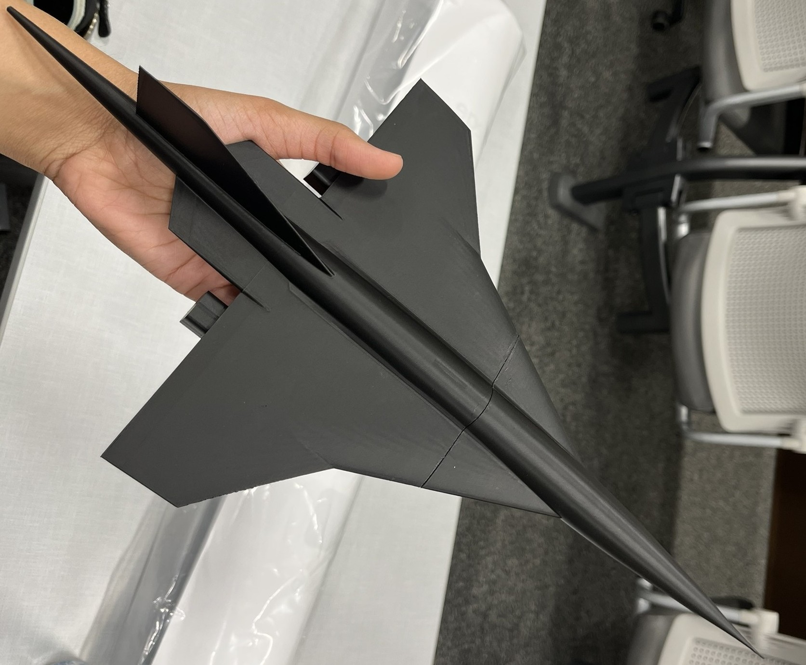

Conceptual Design of Supersonic Business Jet
Aerodynamics & aerothermodynamics lead for a Mach 1.7 SBJ concept.
Researching RDE aerospike nozzles and building simulation and test tooling. Interested in CFD, ML for fluids, and space systems.
Quick stats and links
Aerodynamics & aerothermodynamics lead for a Mach 1.7 SBJ concept.
L/D 4–5 on Mars, >8 on Earth reentry with control margin analyses.
+12% downforce and −7% drag via STAR‑CCM+ sweeps.
AIAA Region IV Student Conferences · 2025
First‑author. Transient aerospike nozzle flowfields with modal analysis for RDE applications.
DOI →AIAA Region IV Student Conferences · 2024
Co‑author. CFD and machine learning workflow for RDE aerospike nozzle design.
DOI →Organizations: AIAA, Honors College Council, SASE. Certification: Machine Learning Specialization (Stanford & DeepLearning.AI).
Outstanding Second Year Leader, inSTEM Scholar, Maverick Academic Scholar, Outstanding AIAA Student Award, Freshman Honor Roll.
Led aerodynamics and aerothermodynamics for a Mach 1.7, 14‑passenger SBJ. Built lift–drag datasets using MATLAB with Digital DATCOM and OpenVSP. Subsonic L/D ≈ 12, supersonic L/D ≈ 7.5. Honors capstone explored folding‑wingtip variable geometry and provided a multidisciplinary decision framework.
Led aero and S&C on a Martian Starship redesign. Achieved L/D ~4–5 for Mars entry and >8 for Earth reentry. Confirmed control ratio >1.5 and ~10–12% static margin. Proposed heat‑shield, fin and strake updates to improve stability and payload.
Optimized UTA Racing A‑modified car aero. 3,000 STAR‑CCM+ RANS iterations across ride‑height and wing‑angle sweeps delivered +12% downforce and −7% drag, improving balance and moving CP by ~5%.